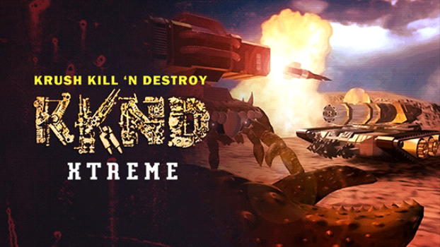

Description
KKnD takes place in a post-apocalyptic setting, where two factions are fighting for control over the few natural resources left. The single-player campaign chronicles a futuristic war in 2140 from the perspective of one of two factions chosen by the player: humans (the 'Survivors') and mutants (the 'Evolved'). Each faction has its own campaign consisting of 15 missions each. KKnD also features a multiplayer mode which allows up to 6 people to play via LAN or modem/serial connection.
